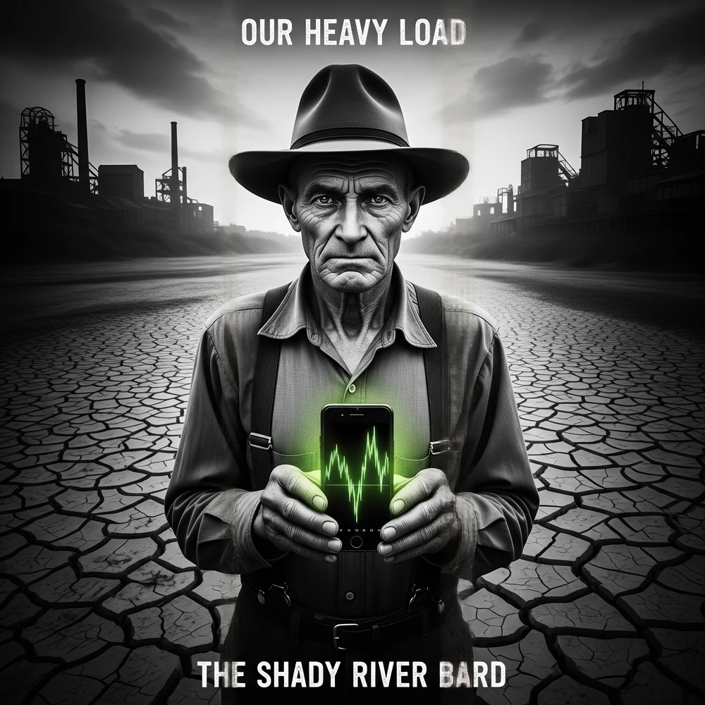

Our Heavy Load
A Sonic Document of the Sovereign Debt Collision & The Human Ledger
The United States approaches an unprecedented financial reckoning: a \$38.09 trillion national debt colliding with compound interest and soaring debt-to-GDP ratios. Our Heavy Load translates these dry fiscal mechanics into visceral, blood-and-rust Industrial Dark Americana. Following the Cantillon Effect from the Federal Reserve headwaters down to the grocery aisles, the album documents the unretired elders, the algorithmic micro-debt traps, and the commercial credit freezes—ultimately locating an unshakeable stoic antidote in the soil and mutual aid.
The Thematic Exhibits
Examine the macroeconomic research, lived sociological profiles, and sound design philosophies underpinning the album's narrative arc.
Money Is Not Neutral: The 1755 Insight
In his 1755 treatise, economist Richard Cantillon observed that money does not disperse throughout an economy like rain over a field; it flows like a river from a single spring. Those who stand closest to the source—primary dealer banks, asset-backed corporations, and the fiscal apparatus—receive the newly created capital first, before wages and prices have adjusted.
They acquire tangible assets, real estate, and equities at current baseline valuations. By the time this liquidity trickles downstream to wage-earners and retirees, consumer prices have surged, eroding real purchasing power. The Cantillon Effect is the silent, structural redistributor that has defined late-stage American financialization.
“The closer to the spring you drink, the sweeter is the wine / But downstream in the Shady River, they're paying for the vine.”
The Unretired Greeter
Track 05 • "The Greeter's Lament"A 73-year-old former machinist standing eight hours on a yellow floor mat at a big-box retail giant. His pension evaporated during 2008 restructuring, and 3% fixed-income yields vanished under ZIRP (zero interest rate policy). He smiles at shoppers while fighting arthritis in his knees.
The Indentured Gig Worker
Track 04 • "Pay in Four"A 24-year-old delivery driver trapped in a web of Buy Now, Pay Later installments. Groceries, steel-toed work boots, and routine car repairs are amortized in bi-weekly \$18 deductions across four fintech apps, disguising systemic insolvency as algorithmic convenience.
The Crowded-Out Merchant
Track 06 • "Crowded Out"A third-generation hardware store owner watching regional banks pull back credit lines. As sovereign Treasury issuance devours global loanable funds to finance interest payments, local commercial rates rise to 11%, leaving no room for main-street working capital.
Industrial Dark Americana: Sound of Rust and Debt
The soundscape of Our Heavy Load avoids conventional studio polish. It blends antique acoustic roots—Drop D resonant resonator guitars, open-back banjos, pump organs, and weeping fiddles—with harsh, mechanical industrial artifacts.
Percussion was built using salvage yard scrap: struck cast iron brake drums, clanking dock chains, and the harsh metallic snap of a mechanical cash drawer. Lofi tape flutter and sub-bass drones simulate the oppressive weight of compound interest pressing downward on human ribs.
From Minsky's Moment to the Ground: The True Citadel
When financial systems reach hyper-fragility (the Minsky Moment), panic ensues. Economists scramble to refinance Ponzi debt, and institutions debase currencies to sustain the illusion. But the album does not terminate in despair.
Act IV ("The Grounding") shifts focus from abstract balance sheets to physical reality: the orchard, the garden bed, the hand-hewn fence, and tangible sound assets (Track 11: "The Anchor"). Grounded in Stoic philosophy (Epictetus's Dichotomy of Control) and permaculture ethics (Earth Care, People Care, Fair Share), the narrative concludes that true sovereignty is found not in monetary games, but in soil, mutual loyalty, and the unyielding human spirit.
13-Track Jukebox & Lyrics Vault
Select any song to stream full studio audio, inspect economic exhibits, and explore complete literary lyrics.
1. 38 Trillion Ghosts
1. 38 Trillion Ghosts
The weight of an abstraction made manifest.
Debt-to-GDP dynamics and the sovereign balance sheet threshold.
Summary loading...
Lyrics loading...
Vote to Prioritize
Album XX: Our Heavy LoadThe Shady River Bard Research Vault relies on community engagement to sequence public streaming releases, vinyl pressings, and live concept performances. Casting your vote flags Our Heavy Load as a high-priority work.